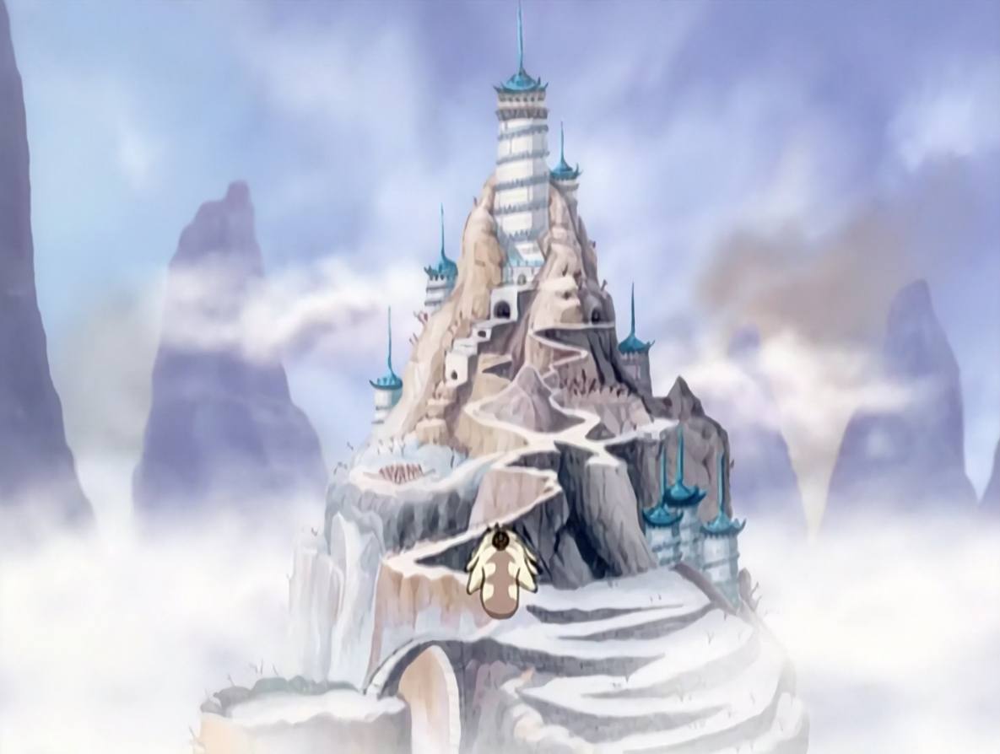
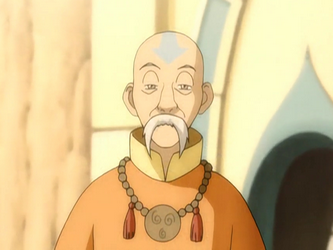
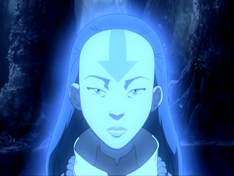
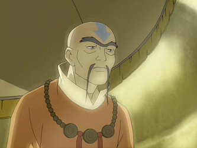
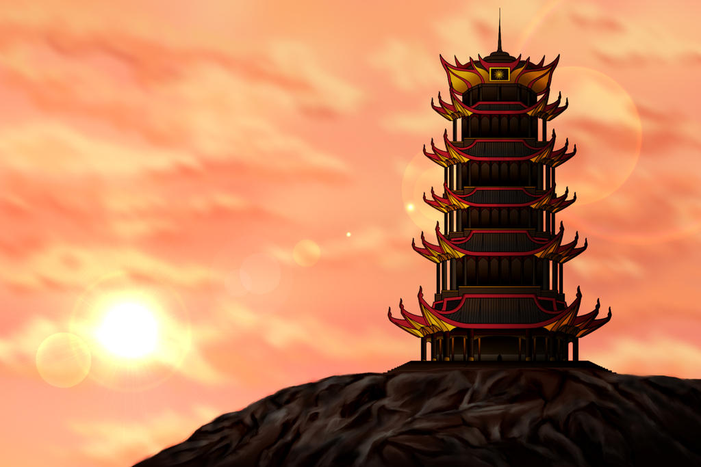
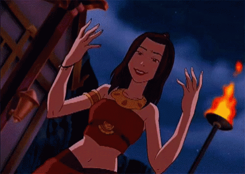
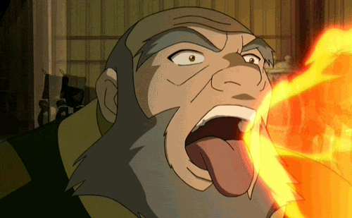
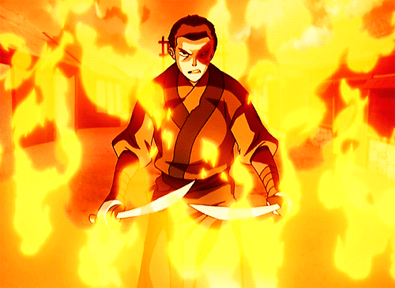

If you're reading this, it is because your browser does not support the audio element
Home
Characters
FAQ
About
Southern Air Temple
The Southern Air Temple, located in the remote Patola Mountain Range, is one of the four original Air Nomad temples and one of the two that traditionally housed male airbenders, the other being the Northern Air Temple. Although it used to accept pilgrims from other nations, the temple was thought to be only accessible via flying bison during Aang's lifetime. In spite of this, the Fire Nation managed to wipe out the temple's population during the Air Nomad Genocide, abruptly ending millennia of use by monks and nuns.

Southern Air Temple
Airbenders

Monk Gyatso

Avatar Yangchen

Pasang
Jinju
Crescent Island Fire Temple
The Crescent Island Fire Temple was a five-tiered pagoda built atop a craggy hill on Crescent Island in the outer Fire Nation. It was maintained by the Fire Sages and closely associated with Avatar Roku, who studied there for many years to master the Avatar State. The ancient temple used mechanisms that required firebending to operate; for example, the sanctuary door could only be opened by five simultaneous fire blasts.

Crescent Island
Firebenders

Azula

Iroh

Zuko
Ozai
“Sometimes life is like this dark tunnel. You cant always see the light at the end of the tunnel, but if you just keep moving... you will come to a better place.”
-Uncle Iroh
Secret tunnel
Secret tunnel, secret tunnel through the mountain secret, secret, secret, secret tunnel!
Click Me!